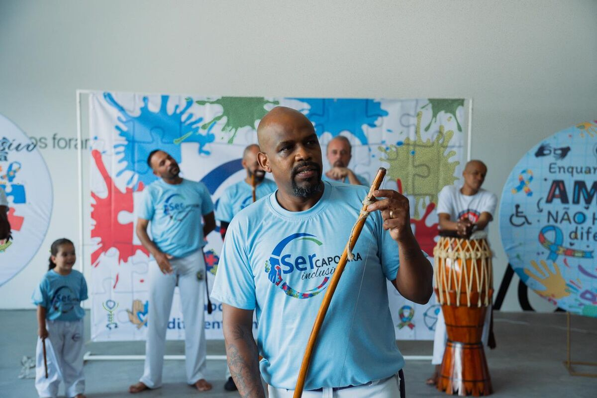

Ajude
Sua ajuda fortalece uma roda onde todos podem participar.
Existem várias formas de apoiar o Ser Capoeira Inclusiva Adaptada. Escolha a sua — toda contribuição faz diferença.
(01) Doações
Contribua com o projeto.
As contribuições financeiras ajudam a fortalecer as atividades do Ser Capoeira Inclusiva Adaptada.
Antes de confirmar o PIX, confira no app do seu banco se o recebedor está correto. Em caso de dúvida, fale diretamente com o Professor Dinho.
Doe via PIX
Ou copie a chave PIX:
(02) Voluntariado
Doe seu tempo e seu talento.
Pessoas que desejam colaborar com tempo, talento ou experiência são bem-vindas. Conte como você gostaria de ajudar e combine os detalhes diretamente com o Professor Dinho.
Algumas ideias de como somar
- Apoio em aulas e eventos
- Fotografia e registro das atividades
- Comunicação e redes sociais
- Outras habilidades que você queira oferecer
(03) Parcerias
Empresas e instituições que acreditam.
Empresas, instituições, profissionais e organizações podem apoiar o Ser Capoeira com recursos, espaço, serviços ou divulgação.
Instituições
Escolas, associações e organizações sociais.
Empresas
Apoio com recursos, materiais, serviços ou espaço.
(04) Divulgação
Compartilhar também é ajudar.
Quanto mais pessoas conhecem o projeto, mais famílias encontram um espaço de acolhimento. Siga o Ser Capoeira no Instagram e compartilhe esta página.

(05) Transparência
Prestação de contas
Este espaço vai reunir informações sobre campanhas, destinação de recursos e resultados do projeto, assim que estiverem disponíveis.
Em preparação
As informações serão publicadas aqui depois de organizadas e validadas pelo responsável pelo projeto.
Fale com a gente
Ficou com alguma dúvida?
O Professor Dinho responde pessoalmente pelo WhatsApp e pelo e-mail.